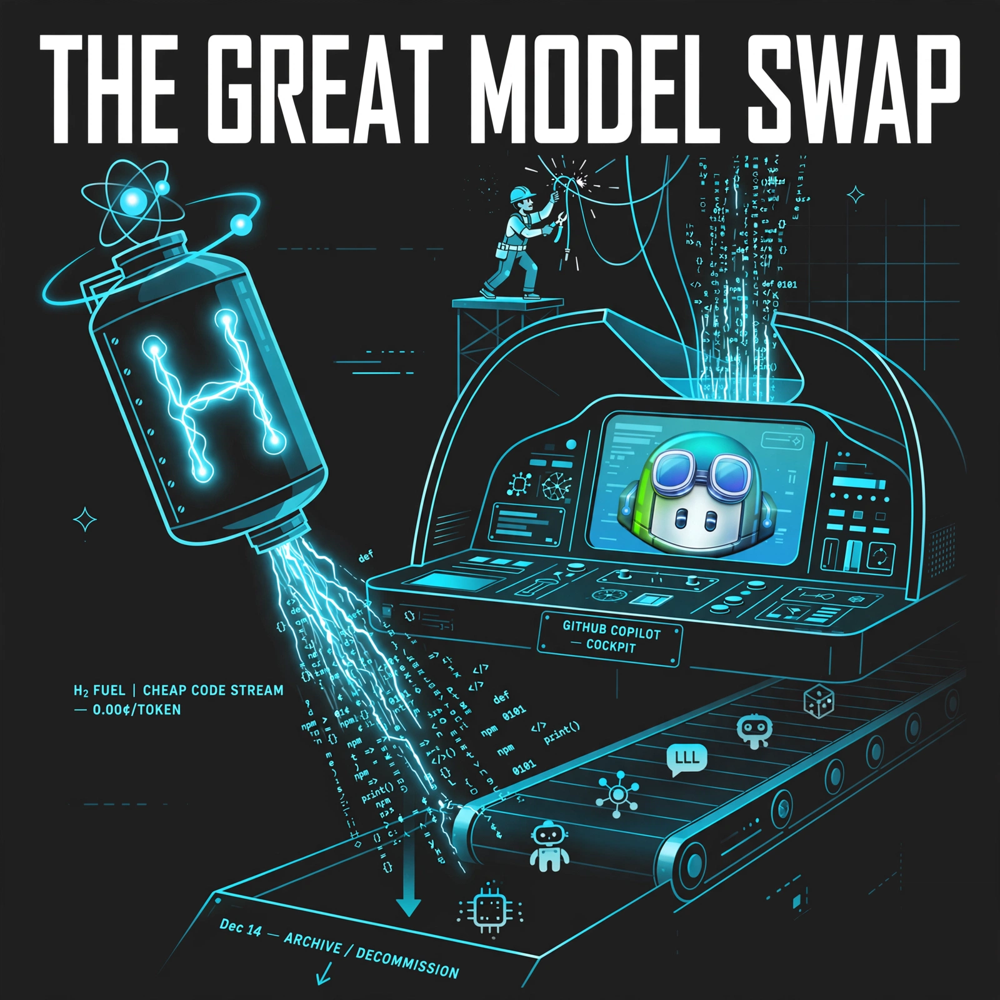

[918][919]
+ Gemini 4 Hydrogen GA Nov 12 at $1.50/$7.50 [unverified] across API/AI Studio, also GA in Copilot Nov 13 [announced-live]
Daily digest

Watch [929] — fetch: HF repo + license / Mistral announcement page dated + OpenRouter listing — need dated primary + artifact for Large 4 weights claim
Watch [913] — fetch: anthropics/claude-code release v2.1.325 notes — versioned patch + permission-flow change
Watch [914] — fetch: Codex CLI releases 0.168.0/0.169.0 notes — versioned exec-trust hardening
Watch [922] — need GA proof: openai.com Businesses/HUB post is beta only — preview, no pricing
Rejected [923] — single-vendor private beta, no pricing/GA date, nothing migrates
Rejected [930] — [older] Nov 5 preview, no managed-agent pricing, on-prem pending
Rejected [927] — confirmed non-release: no GLM-5.5 card/weights/API/price at Nov 6 check
Rejected [928] — [older] Nov 5 third-party catalog only, need dated Zhipu primary + artifact
Rejected [926] — [older] Nov 5 third-party catalog only, need dated MiniMax primary + artifact
Rejected [925] — [older] Oct 31 notice, K2 cutoff/Dec retirement, superseded by K3.1 Pro